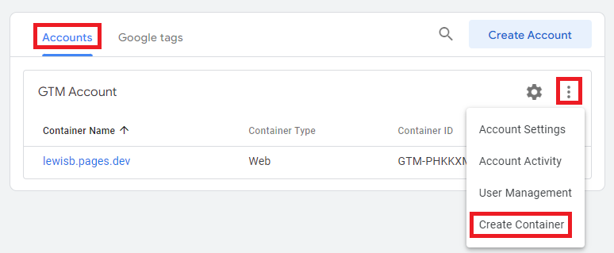
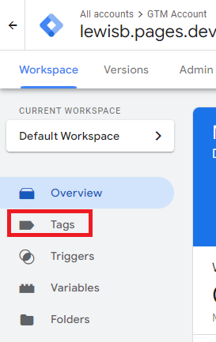
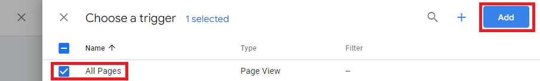
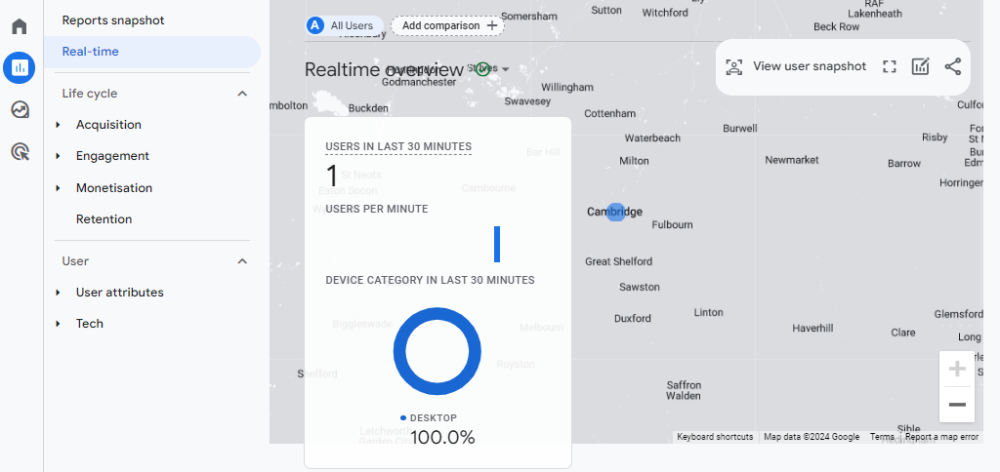

Deploying Google Analytics 4 via Google Tag Manager
To deploy Google Tag Manager and Google Analytics on to your website follow the steps below. This guide assumes you have already have a Google Analytics 4 account and a basic understanding on Google Analytics. I have deployed Google Tag Manager and Google Analytics on to my personal website to track visitors and link clicks.
1. Go to tagmanager.google.com and create a container by going to the Accounts sections, clicking the three ellipsis button (next to the gear icon, and clicking Create Container).

2. In the window that opens provide an appropriate name (such as the domain name of your website) and select the target platform (during my set-ups I have selected Web) then click Create.
3. A window titled Installed Google Tag Manager will open. Follow the instructions in the window explaining where to paste the JavaScript code on your website. If you cannot alter your website code yourself as your development team to make the changes.
4. Close the Installed Google Tag Manager window and click Tags on the left side of the page.

5. On the page that opens click New.
6. Click within the Tag Configuration box and then click Google Analytics and then Google Tag.
7. Enter your Google Analytics Measurement ID into the Tag ID box (your Measurement ID can be found in Google Analytics 4 by going to Admin > Data Streams).
8. After adding the Tag ID click within Triggering, select All Pages, click Add.

9. Click Save and provide an appropriate name (such as: GA4 tag configuration) when prompted.
10. To test the tag is working click Preview at the top of the page, enter your website URL, and click Connect.
11. In Google Analytics 4 go to Admin > DebugView. Having just visited the page during testing in the previous step, a page_view event should appear on the timeline. You will also see activity in Real-time report. The image below shows my visit to my website from Cambridge.
